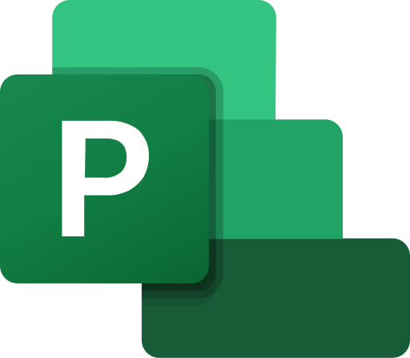

Tools I Use

AutoCAD

Excel

MS Project
Revit
Cost Estimation | Project Scheduling | Project Coordination | MS Office | MS Project | AutoCAD | Revit
← Back to HomeWith over 5 years of experience in the construction industry, I have developed a versatile background across multiple administrative and technical aspects of project management. My expertise includes:
AutoCAD
Excel
MS Project
Revit